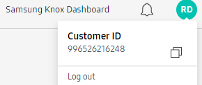
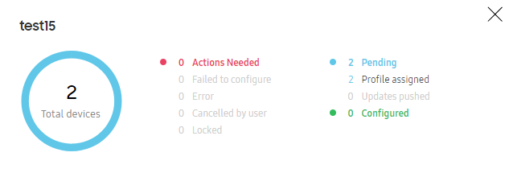
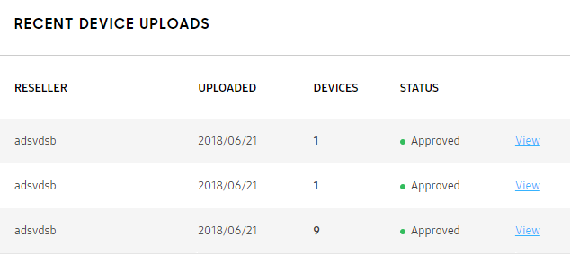
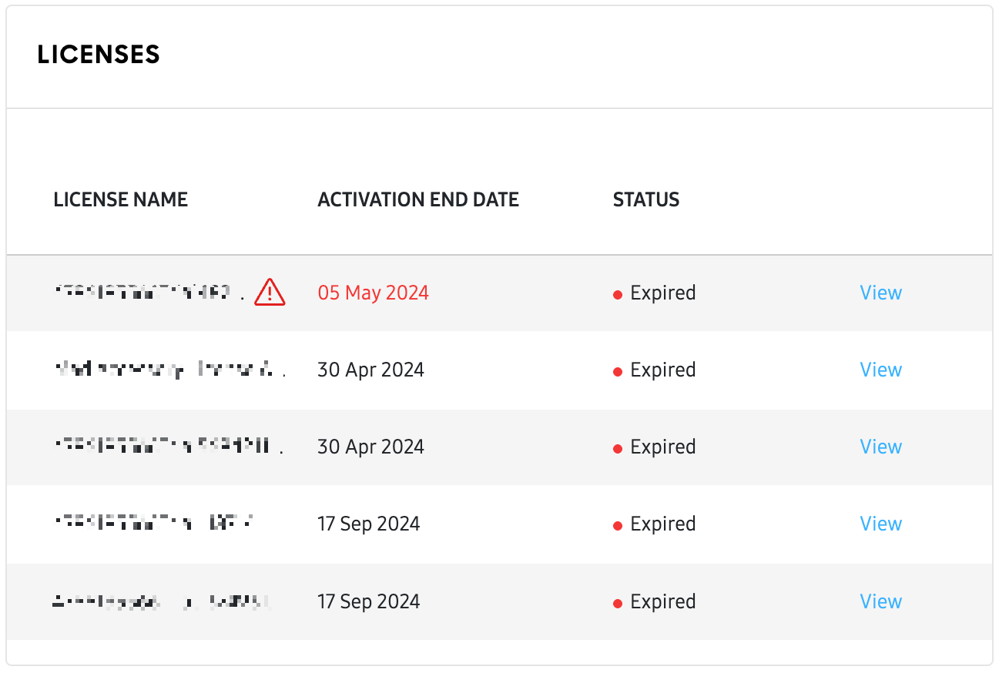
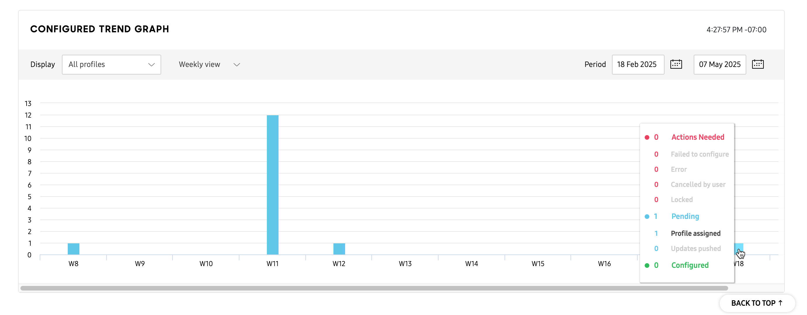

About the Dashboard
Last updated July 26th, 2023
Dashboard is the first screen to display once you have successfully signed in to the Knox Configure console. It is personalized, with customized color status indicators to display “at-a-glance” event severity to administrate events with efficiency. Drill-down to specific profiles and device profiles as needed and make device assignments as the needed. Review license availability and expiry dates for potential license utilization and review a user-filterable configuration graph to assess periods of high and low administration activity.
To obtain your Customer ID, click your account icon. This information may be required when supplying information to your reseller for a variety of reasons.

Refer to the following Dashboard information:

The Knox Configure Dashboard displays the following:
- Total Devices — Lists the cumulative number of devices, in any state, currently managed within the Knox Configure console.
- Unassigned — Lists the total number of devices that have been added to the console but are yet to receive a profile assignment.
- Failed to configure — Lists the total number of devices that were assigned a configuration profile but failed before completion.
- Error — Lists the total number of devices whose profile assignment resulted in an error and placed the device in an error state and awaiting troubleshooting assistance.
- Cancelled by user — Lists the total number of devices whose profile assignment was cancelled by the admin before completion.
- Updates pushed — Lists the total number of devices successfully receiving a profile push update since the last trending period.
- Profile assigned — Lists the total number of devices that received a profile assignment successfully without cancellation or error.
- Configured — Lists the total number of newly configured devices since the last trending period.
Refer to the middle portion of the Dashboard to review recent profile and device uploads. This field is color-coded to easily identify issues requiring administration in case of upload error or configuration failure. In case there are no devices assigned to a displayed profile, select ASSIGN DEVICES to launch the Assign Devices With Profile screen and make the appropriate device assignments.
When there are no profiles in an account, the Dashboard displays a CREATE PROFILE button. Selecting it starts the profile creation screen flow. If there are profiles available in the account, the button displays SELECT A PROFILE TO PIN HERE. Selecting it displays a pop-up where the user can add profiles to the Dashboard.

Refer to the Dashboard’s RECENT DEVICE UPLOADS field to display recent uploads by RESELLER, the date the device UPLOADED, number of uploaded DEVICES by each listed reseller, and their upload STATUS. Optionally select the View link to review separate device uploads in greater detail.

Refer to the LICENSES field to review available Knox Configure license resources by their LICENSE NAME, ACTIVATION END DATE, and STATUS. Each displayed license has its own View link that can be selected to display a License details screen if additional information is required.

Refer to the CONFIGURED TREND GRAPH at the bottom of the Dashboard to filter the number of configured profiles displayed and reviewed at administrator defined intervals. Use the Display drop-down menus to select a specific profile or all profiles. Define whether this graph displays a Daily view, Weekly view or Monthly view. Once your trending period is selected, further refine the display using the Period calendar setting to drill-down to specific periods of profile configuration activity.

On this page
Is this page helpful?